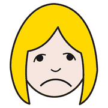
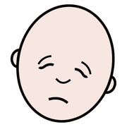
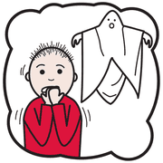
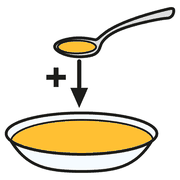
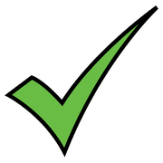
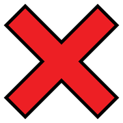
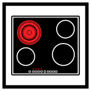
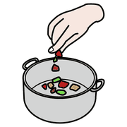
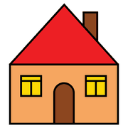

Secondo incontro, modulo 9
Tavole tematiche
Oltre le routine: tavole per dire come ci si sente, per chiedere e per giocare. Un vocabolario da usare liberamente.
spesso
la prima
La tavola delle emozioni
 contento
contento
triste arrabbiato
arrabbiato
stanco
spaventatoSpesso è la prima tavola tematica: permette di esprimere uno stato interno senza parole e riduce i comportamenti legati alla frustrazione.
La tavola delle richieste
 voglio
voglio aiuto
aiuto basta
basta
ancora
sì
noNessun ordine fisso: il bambino indica quello che vuole, quando vuole. Per questo la tavola deve essere sempre a portata di mano e l'adulto deve rispondere in modo coerente.
Il gioco simbolico
 bambola
bambola
cucina giocare
giocareCucina, dottore, costruzioni: una tavola per il gioco di finzione permette di partecipare anche a chi ha difficoltà di comunicazione, e ai bambini appena arrivati senza conoscere ancora l'italiano.
mai troppo
all'inizio
Far crescere una tavola

aggiungere parola
parola crescere
crescereSi comincia con 2-3 simboli già conosciuti, si osserva e si aggiunge poco alla volta. La tavola è viva, non un prodotto finito. La tavola della routine non si toglie: si affianca.
Coerenza in tutta la scuola
 uguale
uguale scuola
scuola
casaStessi simboli, stesso stile, stessa posizione per ogni categoria in tutto l'istituto. Con più plessi e ordini di scuola serve un accordo condiviso, scritto in una pagina.